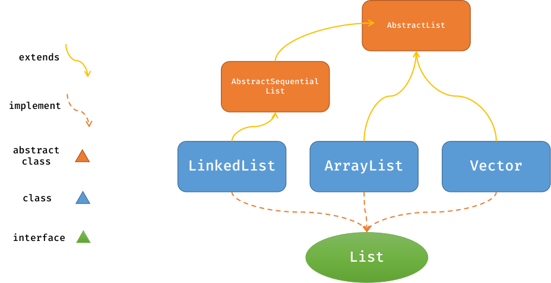
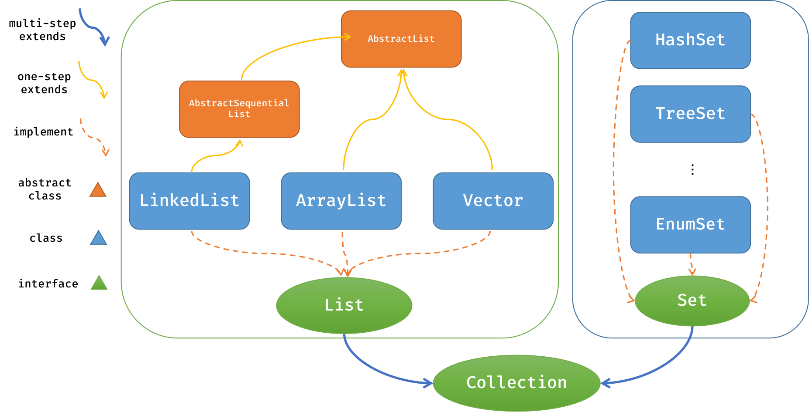
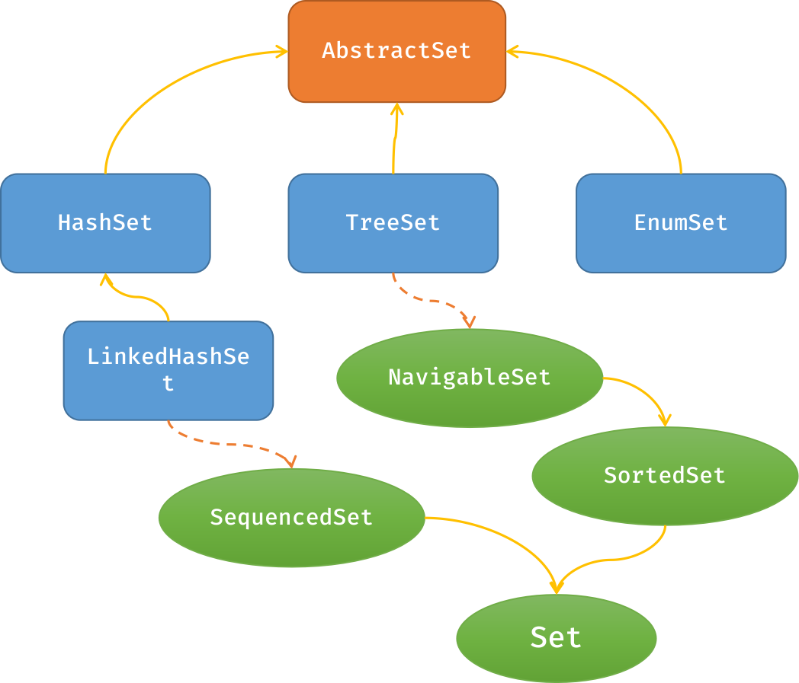

# Java/C++ 中的容器
容器是各类业务场景中的基本工具，Java 中提供了丰富的容器，包括 List、Set、Map、Queue、Deque、Stack 等。当然，C++ 也提供了丰富的容器，包括 vector、list、deque、map、set 等。从丰富度上来讲 C++ 的容器更丰富一些，但 Java 的容器因各类内置的 API 也足够满足大部分业务场景的需求。
# Java 容器汇总
List：有序、可重复的集合，可以存储多个元素，可以根据索引访问元素，可以对元素进行增删改操作。Set：无序 / 有序、不重复的集合，通常用于去重操作。Map：键值对 (key-value pair) 集合，存储键值对，可以通过键快速访问对应的值，键不能重复，但值可以重复。Queue：先进先出（FIFO）的集合，可以存储多个元素，可以对元素进行入队、出队操作。Deque：双端队列，可以从两端同时入队、出队元素，可以实现队列和栈的功能。Stack：后进先出（LIFO）的集合，可以存储多个元素，可以对元素进行入栈、出栈操作。
以上接口的实现类并不是全部，Java 中还有很多其他的容器实现类，这里只列出常用的几种。
# List
ArrayList：基于动态数组实现的列表，适合频繁读取操作 (实现了 RandomAccess 接口)，但插入和删除操作效率较低。LinkedList：基于双向链表实现的列表，支持快速插入和删除操作，但随机访问效率较低。Vector：线程安全的动态数组实现，性能较低，通常不推荐使用。- 其他实现类，包括高性能的 CopyOnWriteArrayList，将在并发 <!--todo 给出 url--> 那块介绍。

1 | package List; |
- 首先，我们来看看 ArrayList 是如何实现 List 接口，看看底层实现如何（基于 OpenJDK-24）。代码如下：
1 | public ArrayList(Collection<? extends E> c) { |
显而易见，就是数组实现的，
elementData 就是一个数组， size 是当前元素的数量。因此，对于常用于检索且鲜于增删操作的对象可以优先考虑 ArrayList 构建。- 接着，我们看看 LinkedList 的源码设计，显示进行无参构造，然后采用的 addAll 方法。显然，就是简单的双向列表
1
2
3
4
5
6
7
8
9
10
11
12
13
14
15
16
17
18
19
20
21
22
23
24
25
26
27
28
29
30
31
32
33
34
35
36
37
38
39
40
41
42
43public boolean addAll(int index, Collection<? extends E> c) {
// check for robustness
checkPositionIndex(index);
Object[] a = c.toArray();
int numNew = a.length;
if (numNew == 0)
return false;****
// 定位插入位置
Node<E> pred, succ;
if (index == size) {
succ = null;
pred = last;
} else {
succ = node(index);
pred = succ.prev;
}
//逐个结点插入
for (Object o : a) {
E e = (E) o;
Node<E> newNode = new Node<>(pred, e, null);
if (pred == null)
first = newNode;
else
pred.next = newNode;
pred = newNode;
}
//最后一个结点插入后，需要succ结点的接入，完整双向列表的搭建
if (succ == null) {
last = pred;
} else {
pred.next = succ;
succ.prev = pred;
}
// update the basic
size += numNew;
modCount++;
return true;
} - 至于 Vector, 它是线程安全的动态数组实现，性能较低，通常不推荐使用。就像 C++ 中的 std::array 一样，能用 std::vector 替代的场景，尽量不要使用 std::array。
| ArrayList | LinkedList | Vector | |
|---|---|---|---|
| 实现方式 | 动态数组 | 双向链表 | 动态数组 |
| 访问效率 | O(1) | O(n) | O(1) |
| 插入效率 | O(n) | O(1) | O(n) |
| 删除效率 | O(n) | O(1) | O(n) |
| 线程安全 | ❌ | ❌ | ✔️ |
线程安全：指当多个线程同时访问某个类或对象时，这个类或对象能够表现出正确的行为，不需要额外的同步或其他协调操作。这里指的是多个线程在容器对象上进行 operation 时，容器对象能够正确地处理并发访问。
# Set
HashSet：基于哈希表实现的无序集合，元素不可重复，适合元素数量较少的情况。LinkedHashSet：基于LinkedHashMap实现的无序集合，元素不可重复，并且保持元素插入的顺序。TreeSet：基于红黑树实现的有序集合，元素不可重复，并且保持元素的排序。EnumSet：枚举类型集合，可以快速创建指定枚举类型的集合。CopyOnWriteArraySet：线程安全的集合，通过拷贝的方式实现元素的添加和删除，适合高并发场景。ConcurrentSkipListSet：基于跳表实现的有序集合，元素不可重复，并且保持元素的排序。


1 | package List; |
来看看 Set 的实现方式：
- HashSet 存在 5 种构造方法。显然，HashSet 是基于 HashMap 实现的，底层使用了哈希表来存储元素。它的构造方法如下：
1
2
3
4
5
6
7
8
9
10
11
12
13
14
15
16
17
18
19
20
21
22
23
24
25
26
27
28
29
30// hashset维护一个hashmap
transient HashMap<E,Object> map;
// 1. 无参构造----默认哈希表容量16,负载因子0.75
public HashSet() {
map = new HashMap<>();
}
// 2. 指定初始容量，负载因子0.75，initialCapacity必须大于0
public HashSet(int initialCapacity) {
map = new HashMap<>(initialCapacity);
}
// 3. 指定初始容量和负载因子，负载因子必须大于0，且不大于1
public HashSet(int initialCapacity, float loadFactor) {
map = new HashMap<>(initialCapacity, loadFactor);
}
// 4. 指定初始容量和负载因子，负载因子必须大于0，且不大于1
// ! 私有构造方法
HashSet(int initialCapacity, float loadFactor, boolean dummy) {
map = new LinkedHashMap<>(initialCapacity, loadFactor);
}
// 5. 通过Collection构造
public HashSet(Collection<? extends E> c) {
map = HashMap.newHashMap(Math.max(c.size(), 12));
addAll(c);
} - TreeSet 通过维护一个 NavigableMap 对象 m, 它也有 5 中构造方法，如下所示：
1
2
3
4
5
6
7
8
9
10
11
12
13
14
15
16
17
18
19
20
21
22
23
24
25
26
27
28// 受维护NavigableMap
private transient NavigableMap<E,Object> m;
public TreeSet() {
this(new TreeMap<>());
}
public TreeSet(Collection<? extends E> c) {
this();
addAll(c);
}
public TreeSet(Comparator<? super E> comparator) {
this(new TreeMap<>(comparator));
}
public TreeSet(Collection<? extends E> c) {
this();
addAll(c);
}
public TreeSet(SortedSet<E> s) {
this(s.comparator());
addAll(s);
}
不难看出，TreeSet 使用 TreeMap 构建，而 TreeMap 是基于红黑树实现的有序映射。
和 C++ 相似，Set 实质上也是 Map 的子集，只不过 Map 可以存储多个值，而 Set 只能存储一个值。但是不同的是，Java 的键值对是分离的，而 C++ 的键值对是绑定的，因此 Java 的 Set 和 Map 都有自己的实现。具体而言，Java 通过 PRESENT 对象来表示 Set 中元素的虚拟值，而 Map 中的值可以是任意对象。
LinkedHashSet 的构造方法调用的是基类 HashSet 的默认构造方法，是基于 LinkedHashMap 实现的，并且保持元素的插入顺序。
1
2
3HashSet(int initialCapacity, float loadFactor, boolean dummy) {
map = new LinkedHashMap<>(initialCapacity, loadFactor);
}
它的构造方法如下：1
2
3
4
5
6
7
8
9
10
11
12
13
14
15
16
17
18
19
20
21
22
23
24
25// definition
public class LinkedHashSet<E>
extends HashSet<E>
implements SequencedSet<E>, Cloneable, java.io.Serializable
// constructors
public LinkedHashSet() {
super(16, .75f, true);
}
public LinkedHashSet(Collection<? extends E> c) {
super(HashMap.calculateHashMapCapacity(Math.max(c.size(), 12)), .75f, true);
addAll(c);
}
public LinkedHashSet(int initialCapacity, float loadFactor) {
super(initialCapacity, loadFactor, true);
}
public LinkedHashSet(int initialCapacity) {
super(initialCapacity, .75f, true);
}EnumSet 是一个特殊的 Set 实现类，它只能存储枚举类型的元素。它的构造方法如下：
1
2
3
4
5
6
7
8
9
10
11
12
13
14/**
* The class of all the elements of this set.
*/
final transient Class<E> elementType;
/**
* All of the values comprising E. (Cached for performance.)
*/
final transient Enum<?>[] universe;
EnumSet(Class<E>elementType, Enum<?>[] universe) {
this.elementType = elementType;
this.universe = universe;
}CopyOnWriteArraySet 和 ConcurrentSkipListSet 是线程安全的 Set 实现类，适合高并发场景。我们将之后在该高并发中介绍。
<!-- todo -->
| HashSet | LinkedHashSet | TreeSet | EnumSet | CopyOnWriteArraySet | ConcurrentSkipListSet | |
|---|---|---|---|---|---|---|
| 实现方式 | 哈希表 | 哈希表 + 链表 | 红黑树 | 枚举类型 | 拷贝数组 | 跳表 |
| 元素顺序 | 无序 | 有序 (按插入次序) | 有序（自然增序 / 定制次序） | 有序 | 无序 | 有序 |
| 线程安全 | ❌ | ❌ | ❌ | ❌ | ✔️ | ✔️ |
| 适用场景 | 元素较少 | 元素较少 | 元素较多 | 枚举类型 | 高并发场景 | 高并发 / 元素较多 |
# Map
HashMap：基于哈希表实现的键值对集合，键不可重复，值可以重复，适合元素数量较少的情况。LinkedHashMap：基于LinkedHashMap实现的键值对集合，键不可重复，值可以重复，并且保持元素插入的顺序。TreeMap：基于红黑树实现的有序键值对集合，键不可重复，值可以重复，并且保持键的排序。EnumMap：枚举类型键值对集合，可以快速创建指定枚举类型的键值对集合。WeakHashMap：弱引用键值对集合，当键不再被引用时，自动删除对应的键值对，适合缓存场景。IdentityHashMap：基于引用相等实现的键值对集合，键不可重复，值可以重复，适合缓存场景。ConcurrentHashMap：线程安全的哈希表实现，适合高并发场景。ConcurrentSkipListMap：基于跳表实现的有序键值对集合，键不可重复，值可以重复，并且保持键的排序。- 补充：HashTable
# Queue
ArrayBlockingQueue：基于数组实现的有界阻塞队列，可以存储多个元素，支持随机访问，但插入和删除操作效率较低。LinkedBlockingQueue：基于链表实现的有界阻塞队列，支持快速插入和删除操作，但随机访问效率较低。PriorityBlockingQueue：基于优先级队列实现的有界阻塞队列，可以存储多个元素，支持随机访问，但插入和删除操作效率较低。DelayQueue：基于优先级队列实现的延迟阻塞队列，可以存储多个元素，支持随机访问，但插入和删除操作效率较低。SynchronousQueue：同步阻塞队列，只能存储一个元素，支持随机访问，但插入和删除操作效率较低。LinkedTransferQueue：基于链表实现的可传输阻塞队列，可以存储多个元素，支持随机访问，但插入和删除操作效率较低。
# Deque
ArrayDeque：基于数组实现的双端队列，可以从两端同时入队、出队元素，支持随机访问，但插入和删除操作效率较低。LinkedList：基于双向链表实现的双端队列，支持快速插入和删除操作，但随机访问效率较低。
# Stack
Stack：基于数组实现的栈，只能存储一个元素，支持随机访问，但插入和删除操作效率较低。LinkedList：基于双向链表实现的栈，支持快速插入和删除操作，但随机访问效率较低。ArrayDeque：基于数组实现的栈，支持快速插入和删除操作，但随机访问效率较低。Deque：基于双向链表实现的栈，支持快速插入和删除操作，但随机访问效率较低。LinkedBlockingDeque：基于链表实现的双端阻塞队列，支持快速插入和删除操作，但随机访问效率较低。ArrayBlockingDeque：基于数组实现的双端阻塞队列，支持快速插入和删除操作，但随机访问效率较低。PriorityBlockingDeque：基于优先级队列实现的双端阻塞队列，支持快速插入和删除操作，但随机访问效率较低。LinkedTransferQueue：基于链表实现的可传输阻塞队列，支持快速插入和删除操作，但随机访问效率较低。
# C++ 容器汇总
vector：动态数组实现的列表，适合频繁读取操作，但插入和删除操作效率较低。list：双向链表实现的列表，支持快速插入和删除操作，但随机访问效率较低。deque：双端队列，可以从两端同时入队、出队元素，可以实现队列和栈的功能。map：基于哈希表实现的键值对集合，键不可重复，值可以重复，适合元素数量较少的情况。set：基于哈希表实现的无序集合，元素不可重复，适合元素数量较少的情况。multimap：基于哈希表实现的键值对集合，键可以重复，值可以重复，适合元素数量较少的情况。multiset：基于哈希表实现的无序集合，元素可以重复，适合元素数量较少的情况。unordered_map：基于哈希表实现的键值对集合，键不可重复，值可以重复，适合元素数量较多的情况。unordered_set：基于哈希表实现的无序集合，元素不可重复，适合元素数量较多的情况。unordered_multimap：基于哈希表实现的键值对集合，键可以重复，值可以重复，适合元素数量较多的情况。unordered_multiset：基于哈希表实现的无序集合，元素可以重复，适合元素数量较多的情况。stack：基于数组实现的栈，只能存储一个元素，支持随机访问，但插入和删除操作效率较低。queue：基于数组实现的队列，只能存储一个元素，支持随机访问，但插入和删除操作效率较低。priority_queue：基于优先级队列实现的队列，可以存储多个元素，支持随机访问，但插入和删除操作效率较低。
<!-- todo -->
# 其他参考
- Java 容器之 List
- Java 容器之 Set
- Java 容器之 Map